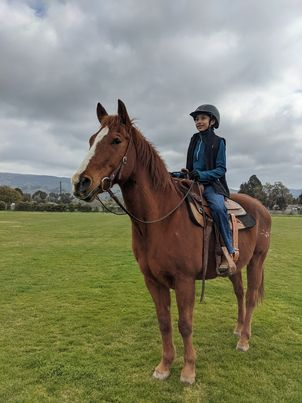
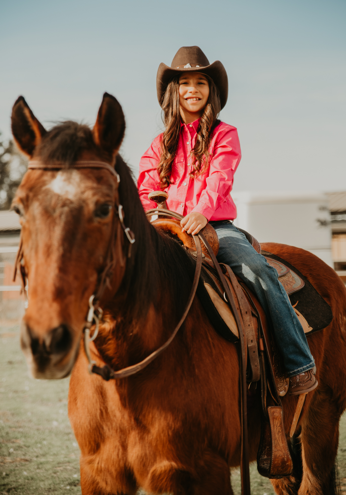
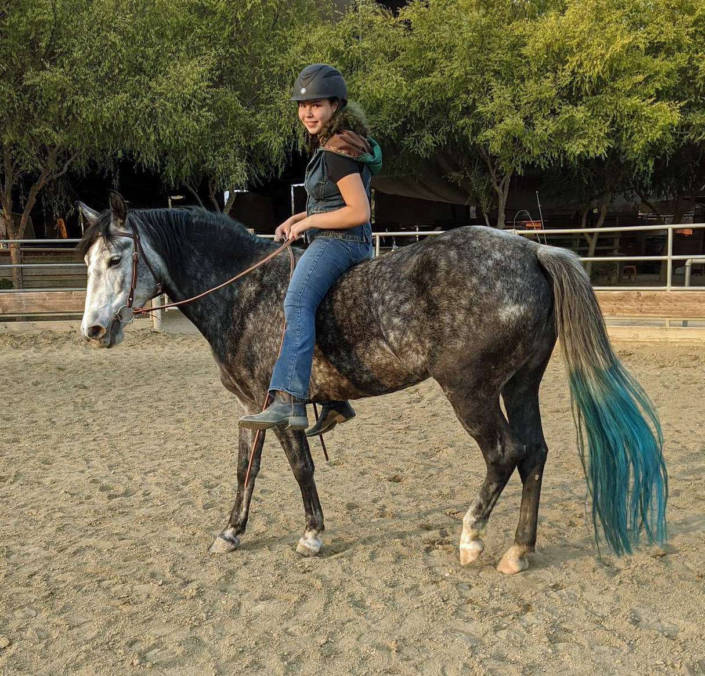
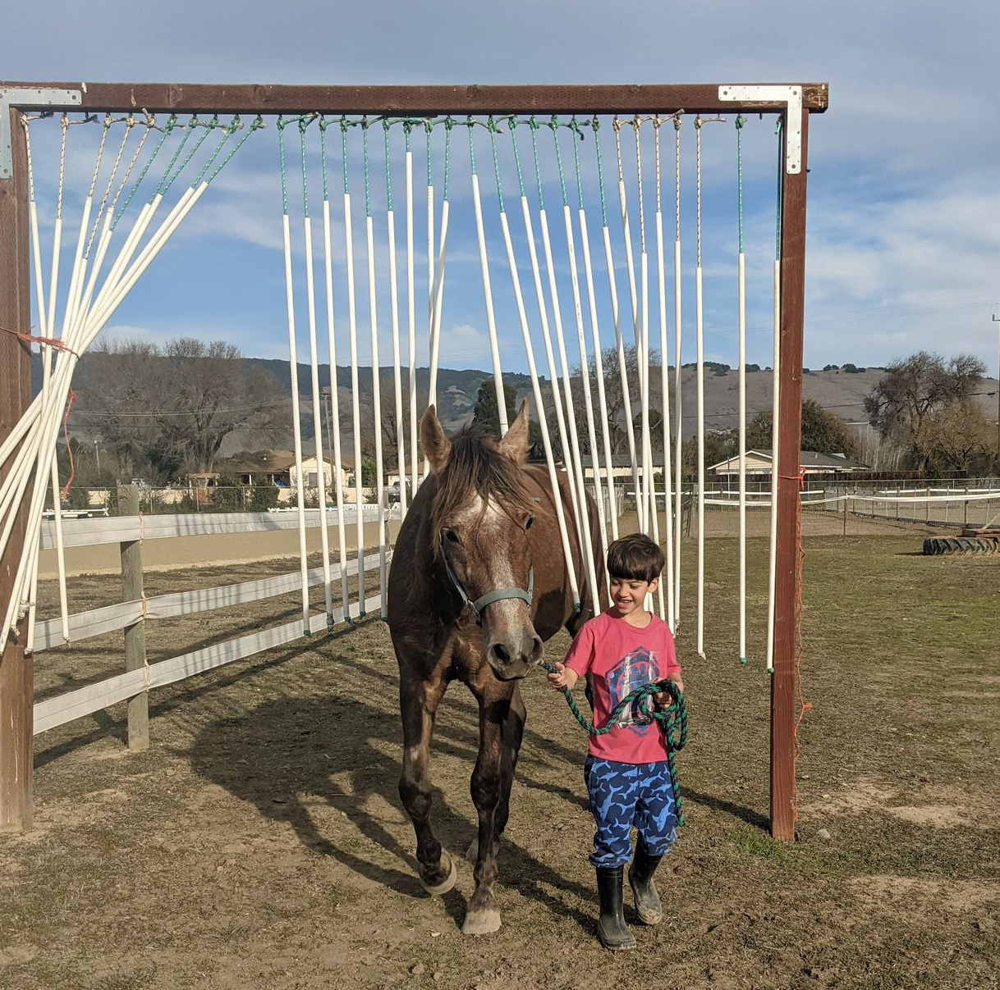

Summer Camp
Summer camp is an excellent place for horse loving children to get a week full of boundless horse activities.
We offer
Children will not only get the opportunity to ride horses every day, but they will also learn horsemanship, basic horse care, grooming, tacking, untacking, bathing, horse colors, horse breeds, nutrition and feed, conformation, how to measure a horse, and other fun things. More in depth knowledge will be given depending on experience level. Any and all horse questions the kids have are encouraged by our knowledgeable instructors. Your child will not only get the chance to bond with one “Mane” horse, but will also get the opportunity to work with several different types of horses.
Dates and times
Monday through Friday:
June 7th through June 11th 10:30am to 4pm*FULL*June 21st through June 25th 10:30am to 4pm*FULL*July 5th through July 9th 10:30am to 4pm*FULL*July 19th through July 23rd 10:30am to 4pm*FULL*
Summer camp is $500 a week per child. $100 deposit is required to hold your spot. This will go towards the total cost of camp. Please sign up ASAP to get a spot. Contact me at the email listed on the Contact page of this website.
If we get a lot of interest more weeks may be added so stay tuned!Please Bring
- a good attitude
- willingness to learn
- riding boots (close toe boots with a heel)
- long pants (jeans or breeches preferred)
- horseback riding helmet (if you do not have one I have some available to borrow)
- sunscreen
- lunch
- water
Meet our Horses
Colonel
This handsome 21 year old quarter horse has been there, done that, and even has a college education! He is gentle, sweet, and slow with beginners. He does everything he can to make sure that you don’t come off, including stopping if you lose your balance, or not going fast if he doesn’t feel you are balanced enough to handle it. While patient with beginners, he also enjoys riders that allow him to show off his fancier buttons such as leg yields, collection, and canter departures. He has been the favorite of many kids over the years.
Sedona
This beautiful 26 year old quarter horse pony has been a favorite lesson horse for over half of her life. She is calm, gentle and utterly patient with beginners. She has the smoothest trot of all the horses, and even if you are not communicating clearly what you want, she has been around the block enough times and is willing enough that she will usually figure it out and give it to you anyway. Her favorite things include being doted on by children, eating extra food, and taking naps at every opportunity.
Annie

This tall beautiful Hanoverian mare is 20 years old. She is sweet and solid. Her bouncy trot and willingness to go forward makes her a favorite for learning to post on. She enjoys being doted on, and having personal space from other horses. Carrots are her favorite snack.
Lavender
This 6 year old Andalusian mare is eye catchingly beautiful with a people oriented personality. She loves to bond and spend time with people most of all, but also enjoys the company of other horses. She is curious and willing. She enjoys having a job and going places with her people.
Luna
This 3 year old Arab Andalusian filly cross is full of personality. She is curious about everything and wants to be a part of anything and everything that goes on. She is sweet, with a benign mischievous streak that causes endless entertainment. She knows all kinds of tricks that she loves to share with people. She has been in training her entire life and is extremely well behaved. Her skills include; long lining, laying down on command, rearing on command, drinking out of a bottle, zipping up jackets, picking up hats and whips, dancing (beginnings of the piaffe), liberty work, leading/positioning, and endless amusement. We may not ride her, but she is still a favorite.
Summer camp 2013 at Almaden Equestrian Center (AEC).